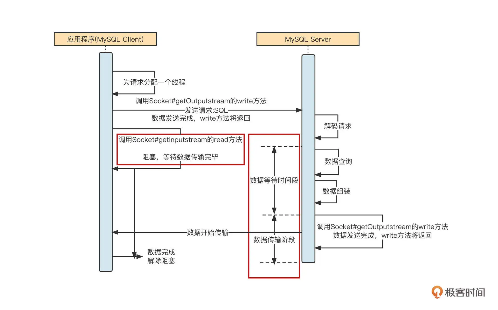
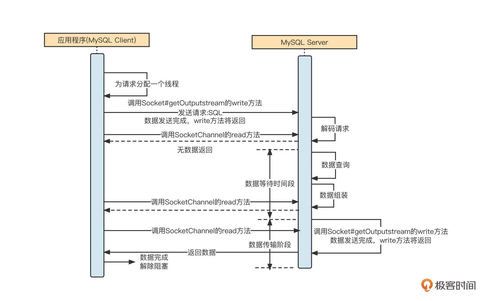
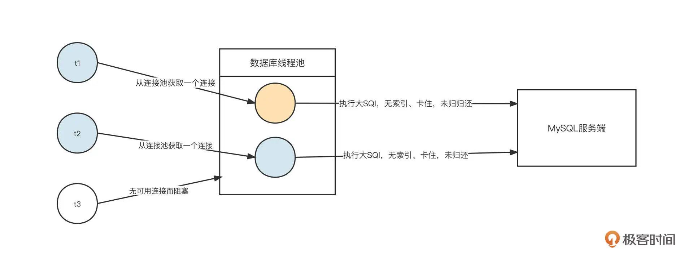
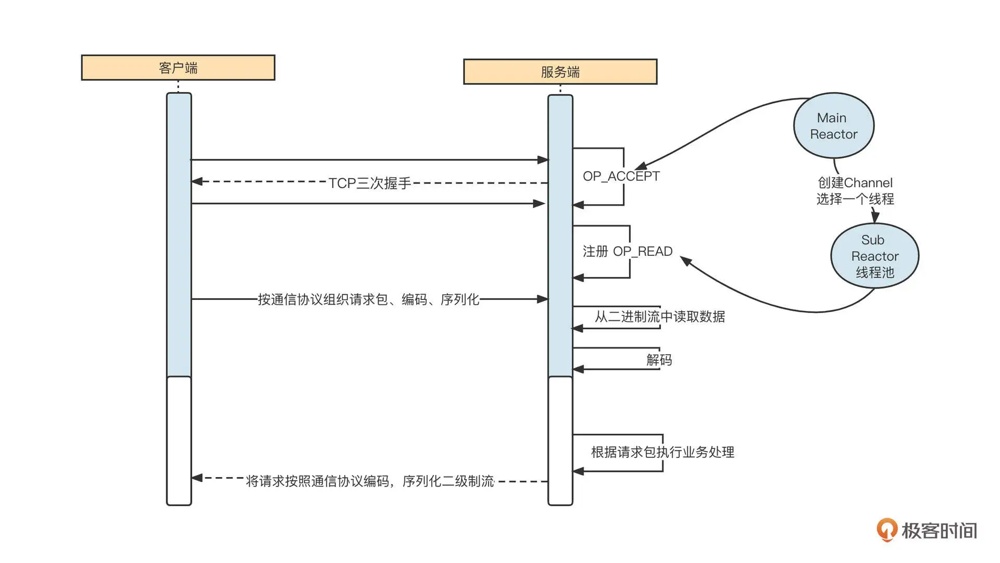

- 00 开篇词 为什么中间件对分布式架构体系来说这么重要？.md.html
- 01 中间件生态（上）：有哪些类型的中间件？.md.html
- 02 中间件生态（下）：同类型的中间件如何进行选型？.md.html
- 03 数组与链表：存储设计的基石有哪些？.md.html
- 04 红黑树：图解红黑树的构造过程与应用场景.md.html
- 05 多线程：多线程编程有哪些常见的设计模式？.md.html
- 06 锁：如何理解锁的同步阻塞队列与条件队列？.md.html
- 07 NIO：手撸一个简易的主从多Reactor线程模型.md.html
- 08 Netty：如何优雅地处理网络读写，制定网络通信协议？.md.html
- 08 加餐 中间件底层的通用设计理念.md.html
- 09 技术选型：如何选择微服务框架和注册中心？.md.html
- 10 设计原理：Dubbo核心设计原理剖析.md.html
- 11 案例：如何基于Dubbo进行网关设计？.md.html
- 12 案例：如何实现蓝绿发布？.md.html
- 13 技术选型：如何根据应用场景选择合适的消息中间件？.md.html
- 14 性能之道：RocketMQ与Kafka高性能设计对比.md.html
- 15 案例：消息中间件如何实现蓝绿？.md.html
- 16 案例：如何提升RocketMQ顺序消费性能？.md.html
- 17 运维：如何运维日均亿级的消息集群？.md.html
- 18 案例：如何排查RocketMQ消息发送超时故障？.md.html
- 19 案例：如何排查RocketMQ消息消费积压问题？.md.html
- 20 技术选型：分布式定时调度框架的功能和未来.md.html
- 21 设计理念：如何基于ZooKeeper设计准实时架构？.md.html
- 22 案例：使用分布式调度框架该考虑哪些问题？.md.html
- 23 案例：如何在生产环境进行全链路压测？.md.html
- 大咖助阵 高楼：我们应该如何学习中间件？.md.html
- 用户故事 学而时习之，不亦乐乎.md.html
- 用户故事 愿做技术的追梦人.md.html
- 用户故事 浪费时间也是为了珍惜时间.md.html
- 结束语 坚持不懈，越努力越幸运.md.html
- 捐赠
07 NIO：手撸一个简易的主从多Reactor线程模型
你好，我是丁威。
中间件是互联网发展的产物，而互联网有一个非常显著的特点：集群部署、分布式部署。当越来越多的服务节点分布在不同的机器上，高效地进行网络传输就变得更加迫切了。在这之后，一大批网络编程类库如雨后春笋般出现，经过不断的实践表明，Netty 框架几乎成为了网络编程领域的不二之选。
接下来的两节课，我们会通过对 NIO 与 Netty 的详细解读，让你对网络编程有一个更直观的认识。
NIO 和 BIO 模型的工作机制
NIO 是什么呢？简单来说，NIO 就是一种新型 IO 编程模式，它的特点是同步、非阻塞。
很多资料将 NIO 中的“N”翻译为 New，即新型 IO 模型，既然有新型的 IO 模式，那当然也存在中老型的 IO 模型，这就是 BIO，同步阻塞 IO 模型。
定义往往是枯燥的，我们结合实际场景看一下 BIO 和 NIO 两种 IO 通讯模式的工作机制，更直观地感受一下它们的差异。
MySQL 的客户端 (mysql-connector-java) 采用的就是 BIO 模式，它的工作机制如下图所示：

我们模拟场景，向 MySQL 服务端查询表中的数据，这时会经过四个步骤。
第一步，应用程序拼接 SQL，然后 mysql-connector-java 会将 SQL 语句按照 MySQL 通讯协议编码成二进制，通过网络 API 将数据写入到网络中进行传输。底层最终是使用 Socket 的 OutputStream 的 write 与 flush 这两个方法实现的。
第二步，调用完 write 方法后，再调用 Socket 的 InputStream 的 read 方法，读取服务端返回数据，此时会阻塞等待。
第三步，服务端在收到请求后会解析请求，从请求中提取出对应的 SQL 语句，然后按照 SQL 抽取数据。服务端在处理这些业务逻辑时，客户端阻塞，不能做其他事情，我把这个阶段称之为等待数据阶段。
第四步，服务端执行完指定逻辑，抽取到合适的数据后，会调用 Socket 的 OutputStream 的 write 将响应结果通过网络传递到客户端。此时，客户端用 read 方法从网卡中把数据读取到应用程序的内存中，此阶段我称之为数据传输阶段。
BIO 的 IO 模型在等待数据阶段、数据传输阶段都会阻塞。其实，“IO 模型”的名称基本就是这两个阶段的特质决定的。
在等待数据阶段，如果发起网络调用后，在服务端数据没有准备好的情况下客户端会阻塞，我们称为阻塞 IO；如果数据没有准备好，但网络调用会立即返回，我们称之为非阻塞 IO。
在数据传输阶段，如果发起网络调用的线程还可以做其他事情，我们称之为异步，否则称之为同步。
这样看来，BIO 的完整名称叫做“同步阻塞 IO”也就不足为奇了。
从 JDK1.4 开始，Java 又引入了另外一种 IO 模型：NIO。
虽然 MySQL 客户端主要使用的是 BIO 模型，但是我们可以演示一下 MySQL Client 采用 NIO 与 MySQL 服务端通信的样子：

NIO 与 BIO 的不同点在于，在调用 read 方法时，如果服务端没有返回数据，该方法不会阻塞当前调用线程，read 方法的返回值会为本次网络调用实际读取到的字节数量。也就是说，客户端调用一次 read 方法，如果本次没有读取到数据，线程可以继续处理其他事情，然后在需要数据的时候再次调用，但是在数据返回的过程中同样会阻塞线程。这也是 NIO 全名的由来：同步非阻塞 IO。
NIO 提供了在数据等待阶段的灵活性，但如果需要客户端反复调用读相关的 API 进行测试，编程体验也极不友好，为了改进 NIO 网络模型的缺陷，又引入了“事件就绪选择机制”。
事件就绪选择机制指的是，应用程序只需要在通道（网络连接）上注册感兴趣的事件（如网络读事件），客户端向服务端发送请求后，无须立即调用 read 方法去尝试读取响应结果，而是等服务端将准备好的数据通过网络传输到客户端的网卡。这时，操作系统会通知客户端“数据已到达”，此时客户端再调用读取 API，从中读取响应结果。其实我们现在说 NIO，说的就是“NIO + 事件就绪选择”的合体。
NIO 和 BIO 模型的使用场景
那 BIO 与 NIO 相比，有什么优劣势呢？它们对应的使用场景是什么？为了直观地展示两种编程模型的优缺点，我们用网络游戏这个场景来举例。
一个简易的网络游戏分为服务端与客户端（玩家）两个端口，我们一起来思考一下，如果游戏服务端分别使用 BIO 技术和 NIO 技术进行架构设计，结果会是怎样的。
BIO 领域一种经典的设计范式是每个请求对应一个线程。我们就用这种思想设计一下游戏的服务端，设计图如下：

游戏服务端后端的设计思想是：采用长连接模式。每当一个客户端上线，服务端就会为请求创建一个线程，在独立的线程中和客户端进行网络读写，一旦客户端下线，就会关闭对应的线程。
但是一台服务器能创建的线程个数是有限的，所以基于 BIO 模式构建的优秀服务端一个非常明显的弊端：在线用户数越多，需要创建的线程数就越多，支撑的并发在线用户数量受到明显制约。更加严重的问题是，服务端与其中某些客户端并不是一直在通信，大量线程的网络连接处于阻塞状态，线程资源无法得到有效利用。
为了防止因为线程急剧膨胀、线程资源耗尽影响到服务端的设计，这时候我们通常会引入线程池。因为引入线程池就相当于是在限流，超过线程池规定的线程数量，服务器就会拒绝连接。
对于需要支持大量在线并发用户（连接）的服务器来说，BIO 的网络 IO 模型绝对不是一个好的选择。
我们再来看下 NIO 模式。基于 NIO 模式设计的游戏服务端模型如下图所示：

基于 NIO，在业界有一种标准的线程模型 Reactor，在这节课的后半部分我们还会详细介绍，这里我们先说明一下 NIO 的优势。
首先，服务端会创建一个线程池专门处理网络读写，我们称之为 IO 线程池。IO 线程池内会内置 NIO 的事件选择器。当游戏服务端监听到一个客户端时，会从 IO 线程池中根据负载均衡算法选择一个 IO 线程，将其注册到事件选择器中。
事件选择器会定时进行事件轮询，挑选出数据进行传输（读取或写入），执行事件选择，然后在 IO 线程中按连接分别读取数据。在将请求解码后，丢到业务线程中执行对应的业务逻辑，它的主要功能是分担 IO 线程的压力，做到尽量不阻塞 IO 线程。
使用 NIO 可以做到用少量线程来服务大量连接，哪怕客户端连接数增长，也不会造成服务端线程膨胀。这个优势的关键点在于，基于事件选择机制，IO 线程都在进行有效的读写，而不像 BIO 那样，在没有数据传输时还得占用线程资源。
也正是因此，NIO 非常适合需要同时支持大量客户端在线的场景。在 NIO 模型下，单个请求的数据包建议不要太大。
值得注意的是，一个 IO 线程在一次事件就绪选择可能会有多个网络连接具备了读或写的准备，但此时对这些网络通道是串行执行的，所以如果每一个网络通道需要读或写的数据比较大，这就必然导致其他连接的延时。
既然 NIO 这么优秀，那为什么 MySQL 数据访问客户端还是采用 BIO 模式呢？为啥不改造成 NIO 呢？
其实在进行技术选型时，并不是越新的技术就越好，我们还是要结合具体问题具体分析。
我们再回过头来看 MySQL 客户端的场景。目前在应用层面，我们会为每一个应用配置一个数据库连接池。当业务线程需要进行数据库操作时，它会尝试从数据库连接池获取一个数据库连接（底层是一条 TCP 连接，负责与服务端进行网络的读与写），然后使用这条连接发送 SQL 语句并获取 SQL 结果。任务结束之后，业务线程会把数据库连接归还给连接池，从而实现数据库连接的复用。
与此同时，我们为了保证数据库服务端的可用性，通常需要强制限制客户端能使用的连接数量。这就注定了数据库客户端没有需要支持大量连接的诉求，在这个场景下，客户端使用阻塞型 IO 对保护数据库服务端更有优势。

简单说明一下。假设业务代码存在缺陷，导致需要执行一条 SQL 语句来获取大量数据。这时，我们要尝试从数据库连接池中获取连接，并通过这个连接向 MySQL 服务端发送 SQL 语句。由于这条 SQL 语句的执行性能很差，这条连接在客户端一直被阻塞，无法继续发送更多的 SQL。另外如果数据库连接池中没有空闲连接，再尝试获取连接时还需要等待连接被释放，服务器缓慢的执行速度确保了客户端不能持续发送新的请求，对保护数据库服务器大有裨益。
这种情况下如果使用 NIO 模型，客户端会无节制地用一条连接发送大量请求，导致服务端出现完全不可用的情况。
总结一下就是，NIO 模型更适合需要大量在线活跃连接的场景，常见于服务端；BIO 模型则适合只需要支持少量连接的场景，常常用于客户端，这也是 MySQL 数据访问客户端会在网络 IO 模型方面使用 BIO 的原因。
Reactor 线程模型
学习 NIO 的理论知识非常枯燥，而且很难做到透彻地理解，我们需要一个实例来深入进去。结合我的学习经验，我觉得学习 Reactor 经典线程模型，尝试编写一个 Reactor 线程模型对提升 NIO 的理解非常有帮助。
为什么这么说呢？因为在编写网络通信相关的功能模块时，建立一套线程模型是非常重要的一环，经过各位前辈不断的实践，Reactor 线程模型已成为 NIO 领域的事实标准，无论是网络编程类库 NIO，还是 Kafka、Dubbo 等主流中间件的底层网络模型都是直接或间接受到了 Reactor 模型的影响。
那什么是 Reactor 线程模型？怎么使用 NIO 来实现 Reactor 模型？这两个问题，就是我们这节课后半部分的重点。
什么是 Reactor 线程模型？
Reactor 主从多 Reactor 模型的架构设计如下图所示：

说明一下各个角色的职责。
Acceptor：请求接收者，作用是在特定端口建立监听。
Main Reactor Thread Pool：主 Reactor 模型，主要负责处理 OP_ACCEPT 事件（创建连接），通常一个监听端口使用一个线程。在具体实践时，如果创建连接需要进行授权校验（Auth）等处理逻辑，也可以直接让 Main Reactor 中的线程负责。
NIO Thread Group（ IO 线程组）：在 Reactor 模型中也叫做从 Reactor，主要负责网络的读与写。当 Main Reactor Thread 线程收到一个新的客户端连接时，它会使用负载均衡算法从 NIO Thread Group 中选择一个线程，将 OP_READ、OP_WRITE 事件注册在 NIO Thread 的事件选择器中。接下来这个连接所有的网络读与写都会在被选择的这条线程中执行。
NIO Thread：IO 线程。负责处理网络读写与解码。IO 线程会从网络中读取到二进制流，并从二进制流中解码出一个个完整的请求。
业务线程池：通常 IO 线程解码出的请求将转发到业务线程池中运行，业务线程计算出对应结果后，再通过 IO 线程发送到客户端。
我们再通过一个网络通信图进一步理解 Reactor 线程模型。

网络通信的交互过程通常包括下面六个步骤。
启动服务端，并在特定端口上监听，例如，web 应用默认在 80 端口监听。
客户端发起 TCP 的三次握手，与服务端建立连接。这里以 NIO 为例，成功建立连接后会创建 NioSocketChannel 对象。
服务端通过 NioSocketChannel 从网卡中读取数据。
根据请求执行对应的业务操作，例如，Dubbo 服务端接受了请求，并根据请求查询用户 ID 为 1 的用户信息。
将业务执行结果返回到客户端（通常涉及到协议编码、压缩等）。
线程模型需要解决的问题包括：连接监听、网络读写、编码、解码、业务执行等，那如何运用多线程编程优化上面的步骤从而提升性能呢？
主从多 Reactor 模型是业内非常经典的，专门解决网络编程中各个环节问题的线程模型。各个线程通常的职责分工如下。
Main Reactor 线程池，主要负责连接建立（OP_ACCEPT），即创建 NioSocketChannel 后，将其转发给 SubReactor。
SubReactor 线程池，主要负责网络的读写（从网络中读字节流、将字节流发送到网络中），即监听 OP_READ、OP_WRITE，并且同一个通道会绑定一个 SubReactor 线程。
编码、解码和业务执行则具体情况具体分析。通常，编码、解码会放在 IO 线程中执行，而业务逻辑的执行会采用额外的线程池。但这不是绝对的，一个好的框架通常会使用参数来进行定制化选择，例如 ping、pong 这种心跳包，直接在 IO 线程中执行，无须再转发到业务线程池，避免线程切换开销。
怎么用 NIO 实现 Reactor 模型？
理解了 Reactor 线程模型的内涵，接下来就到了实现这一步了。
我建议你在学习这部分内容时，同步阅读一下《Java NIO》这本电子书的前四章。这本书详细讲解了 NIO 的基础知识，是我学习 Netty 的老师，相信也会给你一些帮助。
我们先来看一下 Reactor 模型的时序图，从全局把握整体脉络：

这里核心的流程有三个。
服务端启动，会创建 MainReactor 线程池，在 MainReactor 中创建 NIO 事件选择器，并注册 OP_ACCEPT 事件，然后在指定端口监听客户端的连接请求。
客户端向服务端建立连接，服务端 OP_ACCEPT 对应的事件处理器被执行，创建 NioSocketChannel 对象，并按照负载均衡机制将其转发到 SubReactor 线程池中的某一个线程上，注册 OP_READ 事件。
客户端向服务端发送具体请求，服务端 OP_READ 对应的事件处理器被执行，它会从网络中读取数据，然后解码、转发到业务线程池执行具体的业务逻辑，最后将返回结果返回到客户端。
我们解读下核心类的核心代码。
NioServer 的代码如下：
private static class Acceptor implements Runnable {
// main Reactor 线程池，用于处理客户端的连接请求
private static ExecutorService mainReactor = Executors.newSingleThreadExecutor(new ThreadFactory() {
private AtomicInteger num = new AtomicInteger(0);
@Override
public Thread newThread(Runnable r) {
Thread t = new Thread(r);
// 为线程池中的名称进行命名，方便分析线程栈
t.setName("main-reactor-" + num.incrementAndGet());
return t;
}
});
public void run() {
// NIO中服务端对应的Channel
ServerSocketChannel ssc = null;
try {
// 通过静态方法创建一个ServerSocketChannel对象
ssc = ServerSocketChannel.open();
//设置为非阻塞模式
ssc.configureBlocking(false);
//绑定端口
ssc.bind(new InetSocketAddress(SERVER_PORT));
//转发到 MainReactor反应堆
dispatch(ssc);
System.out.println("服务端成功启动。。。。。。");
} catch (IOException e) {
e.printStackTrace();
}
}
private void dispatch(ServerSocketChannel ssc) {
mainReactor.submit(new MainReactor(ssc));
}
}
启动服务端会创建一个 Acceptor 线程，它的职责就是绑定端口，创建 ServerSocketChannel，然后交给 MainReactor 去处理接收连接的逻辑。
MainReactor 的具体实现如下：
public class MainReactor implements Runnable{
// NIO 事件选择器
private Selector selector;
// 子ReactorThreadGroup 即IO线程池
private SubReactorThreadGroup subReactorThreadGroup;
// IO线程池默认线程数量
private static final int DEFAULT_IO_THREAD_COUNT = 4;
// IO线程个数
private int ioThreadCount = DEFAULT_IO_THREAD_COUNT;
public MainReactor(ServerSocketChannel channel) {
try {
// 创建事件选择器
selector = Selector.open();
// 为通道注册OP_ACCEPT 事件，客户端发送数据后，服务端通过该事件进行数据的读取
channel.register(selector, SelectionKey.OP_ACCEPT);
} catch (IOException e) {
e.printStackTrace();
}
// IO线程池，里面包含负载均衡算法
subReactorThreadGroup = new SubReactorThreadGroup(ioThreadCount);
}
public void run() {
System.out.println("MainReactor is running");
while (!Thread.interrupted()) {
Set<SelectionKey> ops = null;
try {
// 进行事件选择
selector.select(1000);
// 经过事件选择后已经就绪的事件
ops = selector.selectedKeys();
} catch (IOException e) {
e.printStackTrace();
}
// 处理相关事件
for (Iterator<SelectionKey> it = ops.iterator(); it.hasNext();) {
SelectionKey key = it.next();
it.remove();
try {
// 如果有客户端尝试建立连接
if (key.isAcceptable()) {
System.out.println("收到客户端的连接请求。。。");
//获取服务端的ServerSocketChannel对象， 这里其实，可以直接使用ssl这个变量
ServerSocketChannel serverSc = (ServerSocketChannel) key.channel();
// 调用ServerSocketChannel的accept方法，创建SocketChannel
SocketChannel clientChannel = serverSc.accept();
// 设置为非阻塞模式
clientChannel.configureBlocking(false);
// 转发到IO线程，由对应的IO线程去负责网络读写
subReactorThreadGroup.dispatch(clientChannel); // 转发该请求
}
} catch (Throwable e) {
e.printStackTrace();
System.out.println("客户端主动断开连接。。。。。。。");
}
}
}
}
}
SubReactorThreadGroup 内部包含一个 SubReactorThread 数组，并提供负载均衡机制，供 MainReactor 线程选择具体的 SubReactorThread 线程，具体代码如下：
public class SubReactorThreadGroup {
private static final AtomicInteger requestCounter = new AtomicInteger(); //请求计数器
// 线程池IO线程的数量
private final int ioThreadCount;
// 业务线程池大小
private final int businessTheadCout;
private static final int DEFAULT_NIO_THREAD_COUNT;
// IO线程池数组
private SubReactorThread[] ioThreads;
//业务线程池
private ExecutorService businessExecutePool;
static {
DEFAULT_NIO_THREAD_COUNT = 4;
}
public SubReactorThreadGroup() {
this(DEFAULT_NIO_THREAD_COUNT);
}
public SubReactorThreadGroup(int ioThreadCount) {
if(ioThreadCount < 1) {
ioThreadCount = DEFAULT_NIO_THREAD_COUNT;
}
//暂时固定为10
businessTheadCout = 10;
//初始化代码
businessExecutePool = Executors.newFixedThreadPool(businessTheadCout, new ThreadFactory() {
private AtomicInteger num = new AtomicInteger(0);
@Override
public Thread newThread(Runnable r) {
Thread t = new Thread(r);
t.setName("bussiness-thread-" + num.incrementAndGet());
return t;
}
});
this.ioThreadCount = ioThreadCount;
this.ioThreads = new SubReactorThread[ioThreadCount];
for(int i = 0; i < ioThreadCount; i ++ ) {
this.ioThreads[i] = new SubReactorThread(businessExecutePool);
this.ioThreads[i].start(); //构造方法中启动线程，由于nioThreads不会对外暴露，故不会引起线程逃逸
}
System.out.println("Nio 线程数量：" + ioThreadCount);
}
public void dispatch(SocketChannel socketChannel) {
//根据负载算法转发到具体IO线程
if(socketChannel != null ) {
next().register(new NioTask(socketChannel, SelectionKey.OP_READ));
}
}
protected SubReactorThread next() {
return this.ioThreads[ requestCounter.getAndIncrement() % ioThreadCount ];
}
SubReactorThread IO 线程的具体实现如下：
public class SubReactorThread extends Thread{
// 事件选择器
private Selector selector;
//业务线程池
private ExecutorService businessExecutorPool;
//任务列表
private List<NioTask> taskList = new ArrayList<NioTask>(512);
// 锁
private ReentrantLock taskMainLock = new ReentrantLock();
/**
* 业务线程池
* @param businessExecutorPool
*/
public SubReactorThread(ExecutorService businessExecutorPool) {
try {
this.businessExecutorPool = businessExecutorPool;
//创建事件选择器
this.selector = Selector.open();
} catch (IOException e) {
// TODO Auto-generated catch block
e.printStackTrace();
}
}
/**
* 接受读写任务
*
*/
public void register(NioTask task) {
if (task != null) {
try {
taskMainLock.lock();
taskList.add(task);
} finally {
taskMainLock.unlock();
}
}
}
/**
* 此处的reqBuffer处于可写状态
* @param sc
* @param reqBuffer
*/
private void dispatch(SocketChannel sc, ByteBuffer reqBuffer) {
businessExecutorPool.submit( new Handler(sc, reqBuffer, this) );
}
public void run() {
while (!Thread.interrupted()) {
Set<SelectionKey> ops = null;
try {
//执行事件选择
selector.select(1000);
// 获取已就绪的事件集合
ops = selector.selectedKeys();
} catch (IOException e) {
// TODO Auto-generated catch block
e.printStackTrace();
continue;
}
// 处理相关事件
for (Iterator<SelectionKey> it = ops.iterator(); it.hasNext();) {
SelectionKey key = it.next();
it.remove();
try {
// 通道写事件就绪，说明可以继续往通道中写数据
if (key.isWritable()) {
SocketChannel clientChannel = (SocketChannel) key.channel();
// 获取上次未写完的数据
ByteBuffer buf = (ByteBuffer) key.attachment();
// 将其写入到通道中。
// 这里实现比较粗糙，需要采用处理taskList类似的方式，因为此时通道缓冲区有可能已写满
clientChannel.write(buf);
System.out.println("服务端向客户端发送数据。。。");
// 重新注册读事件
clientChannel.register(selector, SelectionKey.OP_READ);
} else if (key.isReadable()) { // 接受客户端请求
System.out.println("服务端接收客户端连接请求。。。");
SocketChannel clientChannel = (SocketChannel) key.channel();
ByteBuffer buf = ByteBuffer.allocate(1024);
System.out.println(buf.capacity());
/**
* 这里其实实现的非常不优雅，需要对读取处理办关闭，而且一次读取，并不一定能将一个请求读取
* 一个请求，也不要会刚好读取到一个完整对请求，
* 这里其实是需要编码，解码，也就是通信协议 @todo
* 这里如何做，大家可以思考一下，后面我们可以体验netty是否如何优雅处理的。
*/
int rc = clientChannel.read(buf);//解析请求完毕
//转发请求到具体的业务线程；当然，这里其实可以向dubbo那样，支持转发策略，如果执行时间短，
//，比如没有数据库操作等，可以在io线程中执行。本实例，转发到业务线程池
dispatch(clientChannel, buf);
}
} catch (Throwable e) {
e.printStackTrace();
System.out.println("客户端主动断开连接。。。。。。。");
}
}
// 处理完事件后，我们还需要处理其他任务，这些任务通常来自业务线程需要IO线程执行的任务
if (!taskList.isEmpty()) {
try {
taskMainLock.lock();
for (Iterator<NioTask> it = taskList
.iterator(); it.hasNext();) {
NioTask task = it.next();
try {
SocketChannel sc = task.getSc();
if(task.getData() != null ) { // 写操作
ByteBuffer byteBuffer = (ByteBuffer)task.getData();
byteBuffer.flip();
// 如果调用通道的写函数，如果写入的字节数小于0，并且待写入还有剩余空间，说明缓存区已满
// 需要注册写事件，等缓存区空闲后继续写入
int wc = sc.write(byteBuffer);
System.out.println("服务端向客户端发送数据。。。");
if(wc < 1 && byteBuffer.hasRemaining()) { // 说明写缓存区已满，需要注册写事件
sc.register(selector, task.getOp(), task.getData());
continue;
}
byteBuffer = null;//释放内存
} else {
sc.register(selector, task.getOp());
}
} catch (Throwable e) {
e.printStackTrace();// ignore
}
it.remove();
}
} finally {
taskMainLock.unlock();
}
}
}
}
}
IO 线程负责从网络中读取二进制并将其解码成具体请求，然后转发到业务线程池执行。
接下来，业务线程池会执行业务代码并将响应结果通过 IO 线程写入到网络中，我们对业务进行简单的模拟：
public class Handler implements Runnable{
// 模拟业务处理
private static final byte[] b = "hello,服务器收到了你的信息。".getBytes(); // 服务端给客户端的响应
// 网络通道
private SocketChannel sc;
// 请求报文
private ByteBuffer reqBuffer;
// IO线程
private SubReactorThread parent;
public Handler(SocketChannel sc, ByteBuffer reqBuffer,
SubReactorThread parent) {
super();
this.sc = sc;
this.reqBuffer = reqBuffer;
this.parent = parent;
}
public void run() {
System.out.println("业务在handler中开始执行。。。");
// TODO Auto-generated method stub
//业务处理
reqBuffer.put(b);
// 业务处理完成后，通过向IO线程提交任务
parent.register(new NioTask(sc, SelectionKey.OP_WRITE, reqBuffer));
System.out.println("业务在handler中执行结束。。。");
}
}
我们再来看一下客户端创建连接的代码：
public class NioClient {
public static void main(String[] args) {
// socket
SocketChannel clientClient;
// 事件选择器
Selector selector = null;
try {
// 创建网络通道
clientClient = SocketChannel.open();
// 设置为非阻塞模型
clientClient.configureBlocking(false);
selector = Selector.open();
// 注册连接成功事件，在与服务端通过tcp三次握手建立连接后可以收到该事件
clientClient.register(selector, SelectionKey.OP_CONNECT);
//建立连接，该方法会立即返回
clientClient.connect(new InetSocketAddress("127.0.0.1",9080));
Set<SelectionKey> ops = null;
while(true) {
try {
// 执行事件选择
selector.select();
ops = selector.selectedKeys();
for (Iterator<SelectionKey> it = ops.iterator(); it.hasNext();) {
SelectionKey key = it.next();
it.remove();
if(key.isConnectable()) //连接事件
System.out.println("client connect");
SocketChannel sc = (SocketChannel) key.channel();
// 判断此通道上是否正在进行连接操作。
// 完成套接字通道的连接过程。
if (sc.isConnectionPending()) {
sc.finishConnect();
System.out.println("完成连接!");
// 完成连接后，向服务端发送请求包
ByteBuffer buffer = ByteBuffer.allocate(1024);
buffer.put("Hello,Server".getBytes());
buffer.flip();
sc.write(buffer);
}
// 注册读事件，等待服务端响应包到达
sc.register(selector, SelectionKey.OP_READ);
} else if(key.isWritable()) {
System.out.println("客户端写");
SocketChannel sc = (SocketChannel)key.channel();
//这里是NIO ByteBuffer的基本API
ByteBuffer buffer = ByteBuffer.allocate(1024);
buffer.put("hello server.".getBytes());
buffer.flip();
sc.write(buffer);
} else if(key.isReadable()) {
System.out.println("客户端收到服务器的响应....");
SocketChannel sc = (SocketChannel)key.channel();
ByteBuffer buffer = ByteBuffer.allocate(1024);
int count = sc.read(buffer);
if(count > 0 ) {
buffer.flip();
byte[] response = new byte[buffer.remaining()];
buffer.get(response);
System.out.println(new String(response));
}
// 再次发送消息，重复输出
buffer = ByteBuffer.allocate(1024);
buffer.put("hello server.".getBytes());
buffer.flip();
sc.write(buffer);
}
}
} catch(Throwable e) {
e.printStackTrace();
}
}
} catch (IOException e) {
// TODO Auto-generated catch block
e.printStackTrace();
}
}
}
这样，一个 Reactor 模型就搭建好了。如果你想完整地学习这个 Reactor 模型的详细代码，可以到我的 GitHub上查看。
总结
好了，这节课就讲到这里。
这节课，我们先结合场景介绍了 BIO 与 NIO 两种网络编程模型和它们的优缺点。
根据等待数据阶段和数据传输阶段这两个阶段的特质，我们可以得到 BIO 的全称同步阻塞 IO，还有 NIO 的全称同步非阻塞 IO。NIO 模型更适合需要大量在线活跃连接的场景，常见于服务端；BIO 模型则适合只需要支持少量连接的场景。
我们还了解了一个业内非常经典的线程模型：主从多 Reactor 模型。它的核心设计理念是让线程分工明确，相互协作。Main Reactor 线程池主要负责连接建立，SubReactor 线程池主要负责网络的读写，而编码、解码和业务执行则需要具体情况具体分析。
最后，我还带你使用 NIO 技术实现了主从多 Reactor 模型，给你推荐了一本学习 NIO 必备的电子书《Java NIO》，这本书非常详细介绍了 NIO 的三大金刚：缓存、通道和选择器的各类基础知识。我建议你在阅读完本电子书后，再来反复看看这个 Reactor 示例，相信可以在你进修 NIO 的基础上助你一臂之力。
课后题
学完这节课，我也给你出两道课后题。
- 为什么 NIO 不适合请求体很大的场景？
- 请你详细阅读《Java NIO》这本书中 Reactor 模型的示例子代码，尝试实现一个简易的 RPC Request-Response 模型。例如，模拟 Dubbo 服务调用需要传入基本的参数：包名、方法名，参数。客户端发送这些数据后，服务端根据接收的数据，在服务端要正确打印包名、方法名、参数，并向客户端返回 “hello, 收到请求” + 包名 + 方法名。
欢迎你在留言区留下你的思考结果，我们下节课见！
© 2019 - 2023 Liangliang Lee. Powered by gin and hexo-theme-book.